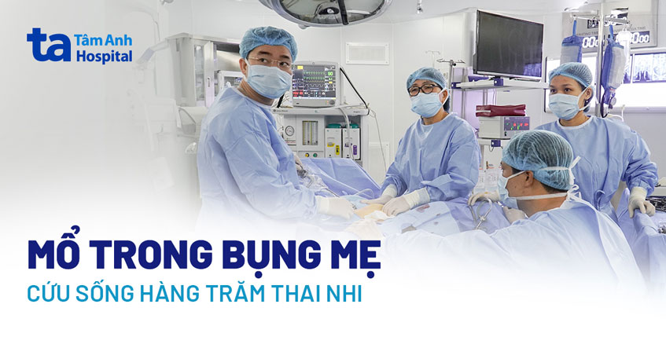

Tháng 2/2018, lần đầu tiên, các bác sĩ Bệnh viện Đa khoa Tâm Anh thực hiện thành công ca phẫu thuật nội soi điều trị hội chứng Truyền máu song thai – một biến chứng Sản khoa nguy hiểm.

Nhìn bé Anh Thư (7 tuổi, ngụ TP HCM) vui vẻ chơi đùa ở hành lang bệnh viện trong lúc chờ tới
lượt tái khám sau ca mổ,
chị Trang – mẹ bé cũng bất ngờ với sự hồi phục thần kỳ của con gái về cả thể chất và tinh
thần.
Bé vốn không thích người lạ, sợ đám đông, và luôn bị kích động khi thấy bác sĩ. Ấy vậy mà
con đã trải qua ca đại phẫu
đầu đời suôn sẻ. Đây được xem là kỳ tích của “chiến binh nhí”, gia đình và đặc biệt là ekip
bác sĩ phẫu thuật – gây mê –
hồi sức – tim mạch nhi – tâm lý của Bệnh viện Tâm Anh TP HCM.
Sản phụ Nguyễn Minh Thu (39 tuổi) mang song thai cùng trứng sau nhiều năm điều trị hiếm muộn. Tuần 20, thai nhi mắc hội
chứng truyền máu song thai. Ngay sau khi được bác sĩ điều trị giới thiệu về nơi điều trị truyền máu song thai tốt nhất,
chị đã tìm đến ThS.BS Đinh Thị Hiền Lê – chuyên gia về y học bào thai, người đầu tiên mổ trong bụng mẹ cứu song thai gặp
hội chứng truyền máu nguy hiểm.
Chị Thu di chuyển nặng nề, khó nhọc bởi bụng đã chướng to, tới Bệnh viện Đa khoa Tâm Anh. Dù ThS.BS Hiền Lê đã kín lịch
hẹn đến gần 10 ngày, nhưng đã ngay lập tức sắp xếp chị Thu khám cấp cứu.
Một thai đã có dấu hiệu tim đập rời rạc, có dấu hiệu phù toàn thân, tràn dịch màng tim, bụng đầy dịch và mất sóng A của
ống Arantius. Thai còn lại cơ hội sống cũng rất mỏng manh. Chỉ định phẫu thuật cho chị Thu ngay lập tức được đưa ra bởi
tình trạng truyền máu song thai đã ở giai đoạn IV – giai đoạn muộn nhất để có thể cứu được thai nhi.
Ca phẫu thuật cấp cứu thai ngay trong bụng mẹ kéo dài 3 tiếng. Bác sĩ Hiền Lê cùng ekip can thiệp thành công, cứu cả hai
thai nhi.
“Thành công này không chỉ từ vai trò của bác sĩ phẫu thuật, mà còn đến từ trách nhiệm, sự nhanh nhạy và lòng trắc ẩn của
toàn bộ ê-kíp, hộ sinh, điều dưỡng…”, bác sĩ Hiền Lê nói.
6 năm về trước, tất cả những trường hợp song thai bị hội chứng truyền máu đành chấp nhận mất con. Một vài trường hợp
chấp nhận tốn kém tiền bạc sang nước ngoài điều trị. Nhưng rào cản ngôn ngữ, thủ tục, chạy đua với thời gian khiến họ
trắng tay. Vừa tốn kém, vừa không cứu được con…
Sau hơn 5 năm, kể từ ca điều trị truyền máu song thai đầu tiên, BVĐK Tâm Anh trở thành điểm tựa của những thai phụ không
may mắc hội chứng này. Hàng trăm trường hợp điều trị truyền máu song thai được phẫu thuật thành công. Gần 1.000 thai nhi
đã được cứu sống, chào đời khỏe mạnh.
Cũng từ đó, tại Bệnh viện Đa khoa Tâm Anh, những sản phụ bị truyền máu song thai đều được sở hữu Thẻ xanh – ưu tiên hàng
đầu trong mọi trường hợp, vì từ nhân viên y tế đến bác bảo vệ cũng hiểu rằng, cơ hội cứu được thai nhi trong bụng mẹ chỉ
đến trong tích tắc, không thể chậm trễ.
Phẫu thuật điều trị hội chứng truyền máu song thai là một trong những kỹ thuật đặc biệt của y học bào thai. Truyền máu song thai (Twin-twin Transfusion Syndrome – TTTS) là hội chứng thường xảy ra khi người mẹ đang mang thai một cặp song sinh cùng trứng, chung bánh nhau, nhưng khác túi ối. Đây là một tai biến sản khoa vô cùng nghiêm trọng. Hội chứng này xảy ra với khoảng 15% trường hợp mang song thai có chung một bánh nhau và chiếm tỷ lệ 0,1-1,9/1000 trẻ sinh ra. Tỷ lệ tử vong khi mắc truyền máu song thai là 80 – 100% trước 26 tuần nếu không điều trị kịp thời. “Trong trường hợp hiện tượng truyền máu song thai xuất hiện trước tuần thứ 20 của thai kỳ, nguy cơ thai nhi tử vong gần như 100% nếu không được can thiệp kịp thời và đúng kỹ thuật”, ThS.BS Đinh Thị Hiền Lê cho biết.
** TPHCM:
- Lý Thường Kiệt
** Hot-line: 034634834363.
** Fanpage: http://www.bachkhoahcm.com
** Website: http://www.bachkhoahcm.com
Cập nhật lần cuối: 02:47 21/12/2023
Chia sẻ:
108 Phố Hoàng Như Tiếp, P. Bồ Đề, Q. Long Biên
108 Phố Hoàng Như Tiếp, P. Bồ Đề, Q. Long Biên